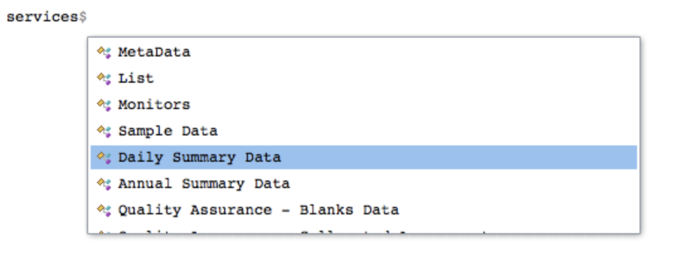
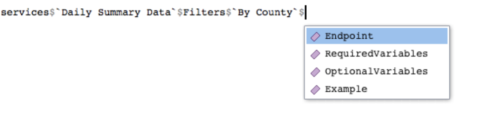

Let’s take a look at how to find endpoints for making queries (see Anatomy of an EPA API request if you don’t know what an endpoint is).
Simple listing
The endpoints object comes loaded with epair. endpoints is a vector that provides all EPA API endpoints in use. You can see these by calling endpoints.
endpoints## [1] "signup" "metaData/isAvailable"
## [3] "metaData/fieldsByService" "metaData/fieldsByService"
## [5] "metaData/issues" "list/states"
## [7] "list/countiesByState" "list/sitesByCounty"
## [9] "list/cbsas" "list/parametersByClass"
## [11] "list/pqaos" "list/mas"
## [13] "monitors/bySite" "monitors/byCounty"
## [15] "monitors/byState" "monitors/byBox"
## [17] "monitors/byCBSA" "sampleData/bySite"
## [19] "sampleData/byCounty" "sampleData/byState"
## [21] "sampleData/byBox" "sampleData/byCBSA"
## [23] "dailyData/bySite" "dailyData/byCounty"
## [25] "dailyData/byState" "dailyData/byBox"
## [27] "dailyData/byCBSA" "annualData/bySite"
## [29] "annualData/byCounty" "annualData/byState"
## [31] "annualData/byBox" "annualData/byCBSA"
## [33] "qaBlanks/bySite" "qaBlanks/byCounty"
## [35] "qaBlanks/byState" "qaBlanks/byPQAO"
## [37] "qaBlanks/byMA" "qaCollocatedAssessments/bySite"
## [39] "qaCollocatedAssessments/byCounty" "qaCollocatedAssessments/byState"
## [41] "qaCollocatedAssessments/byPQAO" "qaCollocatedAssessments/byMA"
## [43] "qaFlowRateVerifications/bySite" "qaFlowRateVerifications/byCounty"
## [45] "qaFlowRateVerifications/byState" "qaFlowRateVerifications/byPQAO"
## [47] "qaFlowRateVerifications/byMA" "qaFlowRateAudits/bySite"
## [49] "qaFlowRateAudits/byCounty" "qaFlowRateAudits/byState"
## [51] "qaFlowRateAudits/byPQAO" "qaFlowRateAudits/byMA"
## [53] "qaOnePointQcRawData/bySite" "qaOnePointQcRawData/byCounty"
## [55] "qaOnePointQcRawData/byState" "qaOnePointQcRawData/byPQAO"
## [57] "qaOnePointQcRawData/byMA" "qaPepAudits/bySite"
## [59] "qaPepAudits/byCounty" "qaPepAudits/byState"
## [61] "qaPepAudits/byPQAO" "qaPepAudits/byMA"You could “manually” find a particular endpoint by looking for similarities with an API service and its endpoint name. For example, to get annual data for a state, it’s easy to see that annualData/byState is the right endpoint to use.
Using the services object
Visually sifting through endpoints can be confusing so another approach is through the services object. If you know what API service you want to use, finding the corresponding endpoint is straightforward.
For example, let’s suppose you want to get daily summary data for a particular county. Then, using the services object we can see the endpoint as follows.
Select Daily Summary Data from services.

Then select the appropriate filter, in this case, By County.

Then, select Endpoint.

services$`Daily Summary Data`$Filters$`By County`$Endpoint## [1] "dailyData/byCounty"In fact, all endpoints for a service can be found using this general template.
services$ServiceName$Filters$SpecificFilter$Endpoint